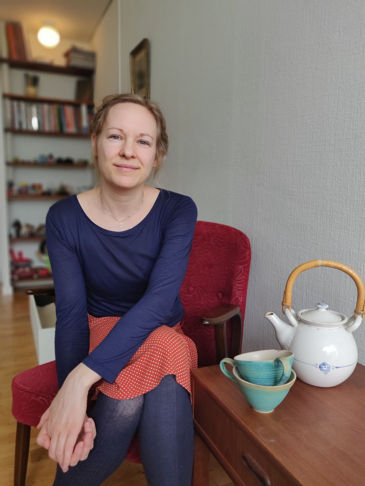

Foredrag
Mine interesser befinder sig i spændingsfeltet mellem psykologi,
filosofi, litteratur og teologi. Jeg har i mange år været dybt optaget
af, hvad det vil sige at være menneske i eksistentiel og etisk
forstand. Mine foredrag tager sit afsæt i grundlæggende eksistentielle
spørgsmål og indeholder anonymiserede eksempler fra min praksis. Jeg
holder blandt andet foredrag om følgende emner:
-
Legens styrke: legen som en vigtig del af barnets udvikling og
bevægelse – og vigtigheden af legen i voksenlivet
-
Hvor kommer selvværd fra? - Om barnets tilknytning og udvikling
-
Sorg: Endnu i dag – mellem diagnose og eksistens
-
Skammens væsen: Skamfølelsen som en god mellemmenneskelig of
væsentlig udviklingspsykologisk følelse
-
Anoreksiens ansigt: om spiseforstyrrelsers grundlæggende angst og
menneskelige forsøg på overlevelse
- Sårbarhed og styrke
